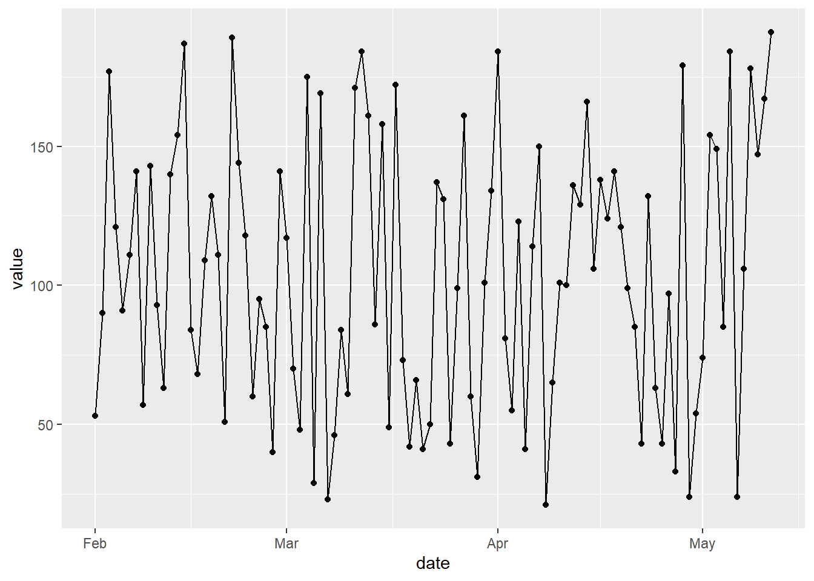
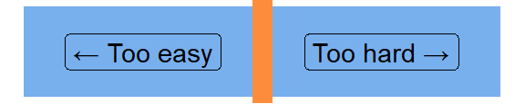
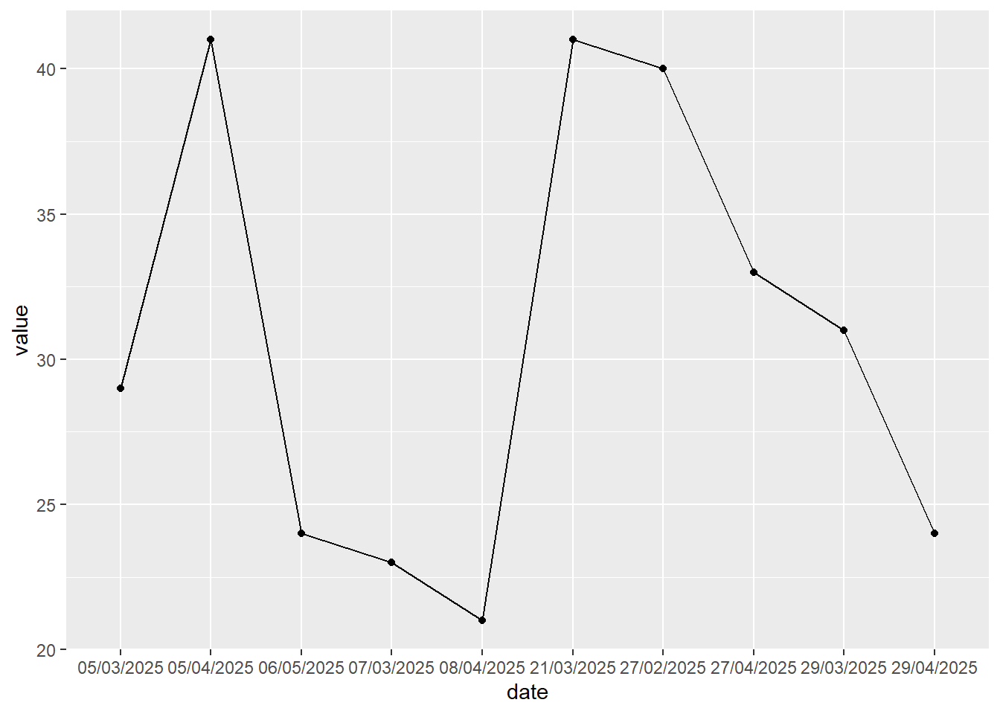

Dates and times with lubridate
R
beginner
Previous attendees have said…
- 4 previous attendees have left feedback
- 75% would recommend this session to a colleague
- 100% said that this session was pitched correctly

NoteThree random comments from previous attendees
- The sessions was useful for grounding us in basic lubridate skills
- Nice introduction, examples and practice for using lubridate.
- All the content was very relevant. Found the run through a bit quick but I think I picked up most of it. A useful summary of the lubridate functions, thank-you.
About this session
- this is a beginner’s introduction to working with dates and times with lubridate
- focus on core parsing, get/set, and rounding functions
- lots on dates, a bit of date-times, no times
TipSession resources
- Lubridate cheatsheet
- R4DS 2e chapter on dates and times
- quick primer on ISO8601
- there’s also a bit of optional sample data which you can download as a .csv
Why lubridate?
- makes some of the simple things easier
- also makes some of the complicated things possible, even though we won’t talk about them here
- note that lubridate is:
- not the only way of dealing with dates
- not always the best, but on balance the most consistent, and least quirky tools for dates
Getting started
- Open a new Rstudio project
- In the console, run
install.packages("lubridate") - Once installation has completed, create a new R script and save it
- Add
library(lubridate)to the start of the script
Dates in R
- effectively an integer count of days since 1970-01-01 (basically Unix time)
- that means we can convert integers to dates using
as_date():
[1] “1970-01-01”
as_date(20640) # date-of-writing[1] “2026-07-06”
as_date(-1000) # unlike Excel, R is fine with dates before 1970[1] “1967-04-07”
as_date(1:3) # vectorised[1] “1970-01-02” “1970-01-03” “1970-01-04”
[1] “Date”
as.numeric(as_date(1000)) # converting back from date to numeric[1] 1000
Date-times in R
- effectively an integer too, but of seconds since 1970-01-01 00:00:00 UTC
- this is a pain-point when coming from Excel. Excel dates are days since 01-01-1900, and datetimes/times are decimal proportions of days (so
1.5in Excel = 36 hours)
as_datetime(0)[1] “1970-01-01 UTC”
as_datetime(1783327643) # date-time-of-writing[1] “2026-07-06 08:47:23 UTC”
as_date(-1000) # unlike Excel, R is fine with dates before 1970[1] “1967-04-07”
as_datetime(1:3) # vectorised[1] “1970-01-01 00:00:01 UTC” “1970-01-01 00:00:02 UTC” [3] “1970-01-01 00:00:03 UTC”
class(as_datetime(1000)) # date-times are held using the POSIXct class, again from base-R[1] “POSIXct” “POSIXt”
as.numeric(as_datetime(1000)) # converting back from date to numeric[1] 1000
as_datetime(2 ^ 31-1) # 32 bit signed int, which might cause a few problems[1] “2038-01-19 03:14:07 UTC”
Time zones
- these date-times have an implicit time zone built-in (which is UTC)
- that’s potentially very important for time calculations (e.g. when calculating shifts when the clocks go back or similar)
- time zones are also part of base R
- we can set the time zone explicitly:
as_datetime(1783327643, tz = "GB")[1] “2026-07-06 09:47:23 BST”
as_datetime(1783327643, tz = "Europe/London") # equivalent: don't think there are specifically Scottish codes though[1] “2026-07-06 09:47:23 BST”
- you can find your local time zone using
Sys.timezone(), and see a list of all time zones (hundreds) usingOlsonNames()
Parsing dates
- converting dates in your raw data into proper R dates is known as parsing
-
as_datein our examples above started with a number of days or seconds - if we have dates in our data, we’ll need to calculate those numbers of days/seconds
- it’s extremely important. For example…

typeof(dat$date)[1] “character”
- make sure that dates in your data are stored as dates/date-times, not chr
-
str()/glimpse()are your friends here - most functions that accept dates (like ggplot) will mis-behave if you feed them date-shaped-words
- e.g. alphabetically-ordered dates in the plot above
- we also often want to be able to calculate with dates
- yet this sort of parsing is a pain, because there are loads of inconsistent and ambiguous ways of representing dates
Parsing functions
- taking human-readable dates (and date times) and parsing them is where lubridate shines
as_date("2026-07-06") # good for ISO8601-ish dates[1] “2026-07-06”
dmy("06*07/2026")[1] “2026-07-06”
ymd("2026__07__06")[1] “2026-07-06”
dmy_hms("6/7/26 10:32:01")[1] “2026-07-06 10:32:01 UTC”
Inconsistent date formats
[1] “2024-05-17” “2024-05-17” “2024-05-17” “2024-05-17” “2024-05-17”
parse_date_time(date_input, orders = c("dmy", "ymd", "mdy")) # similar, but note date times[1] “2024-05-17 UTC” “2024-05-17 UTC” “2024-05-17 UTC” “2024-05-17 UTC” [5] “2024-05-17 UTC”
What’s the time now?
today()[1] “2026-07-06”
date_decimal(2024.37534)[1] “2024-05-17 08:59:11 UTC”
now()[1] “2026-07-06 11:12:37 BST”
now("Japan")[1] “2026-07-06 19:12:37 JST”
random_zone <- sample(OlsonNames(), 1)
cat(paste("The date-time in", random_zone, "is", now(sample(OlsonNames(), 1))))The date-time in America/Rainy_River is 2026-07-06 11:12:37.840098
Get and set
- as well as parsing text into proper dates, lubridate has many get/set functions for accessing/changing parts of dates
- we’ll show these off using
today()to easily generate a date
Years
[1] 2026
[1] FALSE
[1] 3
[1] 2
[1] 2026.2
Months and weeks
[1] 7
[1] Jul 12 Levels: Jan < Feb < Mar < Apr < May < Jun < Jul < Aug < Sep < … < Dec
[1] 27
[1] 27
Days
[1] 6
[1] 2
[1] Mon Levels: Sun < Mon < Tue < Wed < Thu < Fri < Sat
[1] 6
Hour and minute
[1] 11
[1] 12
[1] TRUE
[1] TRUE
Set
[1] “2026-07-06 11:00:00 BST”
[1] 5
day(test_date) <- 11
test_date[1] “2023-06-11”
Round
floor_date(today(), unit = "week")[1] “2026-07-05”
round_date(today(), unit = "week")[1] “2026-07-05”
ceiling_date(today(), unit = "month")[1] “2026-08-01”
[1] “2026-06-30”
Excel dates
- Excel dates start at 1900 rather than 1970
as_date(45429 - 25569) # dirty but effective for dates because it's more human read-able[1] “2024-05-17”
as_date(45429, origin = "1899-12-30") # better for dates, but note the off-by-one error in 1900-format dates[1] “2024-05-17”
Excel date times
- Excel’s date times are stored as days and fractions of a day
- in R, that makes them much more horrible than dates, because we think about date times in seconds, rather than days
- do the offset first, to account for the different starting points of the different systems
- days have
60 * 60 * 24 = 86400seconds, so then multiply the decimal part by 86400
as_datetime((46209.43 - 25569) * 86400) # beware the rounding errors though[1] “2026-07-06 10:19:12 UTC”